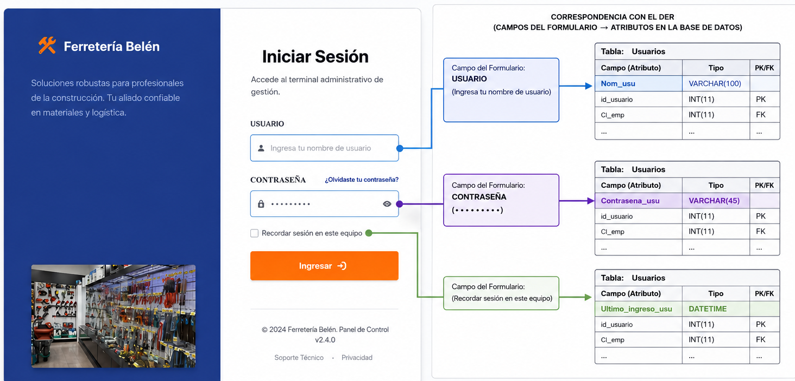

Sistema de Información Web para la Gestión, Control de Inventario y Consultas de Productos de Construcción de la Ferretería Belén
Control de inventario, ventas en tiempo real, compras automatizadas y consultas inteligentes. Arquitectura robusta con metodologías ágiles.
Capítulo 1: Marco Introductorio
La transformación digital se ha convertido en un factor clave para mejorar la competitividad y eficiencia de las organizaciones, especialmente en pequeñas y medianas empresas dedicadas a actividades comerciales. En el sector ferretero, la gestión adecuada de inventarios, ventas y compras constituye un elemento fundamental para garantizar la disponibilidad de productos, optimizar recursos y brindar una atención eficiente a los clientes.
La Ferretería Belén desarrolla actividades relacionadas con la comercialización de materiales y productos para la construcción, manejando un amplio catálogo de artículos que requieren un control permanente de existencias, movimientos de inventario y registro de transacciones comerciales. Sin embargo, gran parte de estos procesos se realizan de forma manual mediante registros físicos y anotaciones tradicionales, lo que limita la capacidad de administrar la información de manera eficiente y oportuna.
Desde la perspectiva de la Ingeniería de Sistemas, la automatización de procesos mediante sistemas de información permite integrar datos, reducir errores operativos y proporcionar información confiable para la toma de decisiones. En este contexto, surge la necesidad de desarrollar un Sistema de Información Web para la Gestión, Control de Inventarios y Consultas de Productos de Construcción de la Ferretería Belén, orientado a optimizar los procesos administrativos y operativos mediante el uso de tecnologías web, bases de datos relacionales y mecanismos de control automatizado.
La implementación de esta solución tecnológica permitirá centralizar la información de productos, ventas, compras y consultas, facilitando el acceso en tiempo real a los datos del negocio y contribuyendo al fortalecimiento de la gestión organizacional de la empresa.
Sistema de Información Web para la Gestión, Control de Inventarios y Consultas de Productos de Construcción de la Ferretería Belén.
Actualmente, la Ferretería Belén presenta deficiencias en la gestión y control de su inventario debido a la utilización de procedimientos manuales para el registro de productos, ventas y compras. Esta situación genera dificultades para mantener información actualizada sobre la disponibilidad de productos, ocasionando inconsistencias en los registros, errores humanos frecuentes y retrasos en las operaciones diarias. La ausencia de un sistema integrado impide realizar un seguimiento preciso de las entradas y salidas de inventario, provocando pérdidas económicas derivadas de productos vencidos, dañados o extraviados. Asimismo, existe dificultad para identificar productos con alta demanda, productos de baja rotación y niveles críticos de stock, afectando directamente la planificación de compras y la reposición de mercancías.
Bajo este contexto, se formula la siguiente Pregunta Esencial desarrollada:
La presente investigación busca responder esta interrogante mediante el análisis, diseño y propuesta de una solución tecnológica que permita mejorar significativamente la gestión de inventarios, ventas, compras y consultas de productos dentro de la organización.
Desarrollar un sistema de información web para la gestión, control de inventarios y consulta de productos de construcción de la Ferretería Belén, mediante la integración de módulos de administración de productos, ventas, compras, reportes y consultas, con el propósito de automatizar los procesos operativos, garantizar la integridad de la información, optimizar el control del inventario y proporcionar soporte eficiente para la toma de decisiones administrativas.
- Implementar un módulo de gestión de productos que permita registrar, actualizar, eliminar y consultar información relacionada con productos de construcción, incluyendo categorías, proveedores, precios y niveles de stock.
- Desarrollar un módulo de gestión de ventas que registre transacciones comerciales en tiempo real, genere comprobantes y actualice automáticamente las existencias disponibles en el inventario.
- Diseñar e implementar un módulo de gestión de compras a proveedores que permita registrar adquisiciones de productos y sincronizar automáticamente la actualización del stock almacenado.
- Implementar un módulo de consulta de productos que facilite la búsqueda y visualización de información mediante filtros por nombre, categoría, disponibilidad y características del producto.
- Desarrollar un módulo de generación de reportes que permita obtener información consolidada sobre inventarios, ventas, compras y ganancias para apoyar los procesos de control y toma de decisiones.
- Implementar un mecanismo de autenticación y control de acceso basado en roles de usuario, garantizando la seguridad, confidencialidad e integridad de la información gestionada por el sistema.
- Diseñar una arquitectura cliente-servidor basada en tecnologías web y bases de datos relacionales que asegure la disponibilidad, escalabilidad y mantenibilidad de la aplicación.
- Automatizar los procesos de actualización de inventario mediante reglas de negocio que controlen las entradas y salidas de productos derivadas de compras y ventas realizadas en el sistema.
- Diagramar la arquitectura técnica del sistema utilizando una arquitectura cliente-servidor en capas que permita una adecuada organización de los componentes del software.
- Validar la propuesta del sistema mediante el desarrollo y despliegue de una Landing Page que permita presentar y evaluar las funcionalidades planteadas.
Voy a tomar como base la bibliográfica de Ian Sommerville en su obra "Ingeniería de Software" el presente proyecto se clasifica formalmente dentro de las categorías de aplicaciones interactivas basadas en transacciones o compras.
La justificación es que según Sommerville, las aplicaciones interactivas basadas en transacciones son aquellos sistemas de software que se ejecutan en una computadora remota y los cuales los usuarios acceden desde sus propias terminales para interactuar con la base de datos centralizada.
El autor destaca que la función principal de estos sistemas es procesar las peticiones de los usuarios para actualizar la información de la base de datos o extraer datos de la misma, siendo algunos ejemplos las aplicaciones de gestión empresarial o comercios electrónicos. Cada una de estas acciones altera el estado de la base de datos central, requiriendo mecanismos que aseguren la integridad de los datos, la consistencia del inventario y el control adecuado de la concurrencia ósea evitando que dos clientes reserven la misma bolsa de cemento si solo queda una en stock.
El presente proyecto se enfoca en la ferretería "Belén", mediante el desarrollo de un sistema de información web que permita gestionar de manera eficiente los productos de construcción.
El sistema contará con módulos definidos a partir de los casos de uso identificados durante el análisis del sistema:
- Módulo de Inicio de Sesión: permitirá al administrador acceder al sistema mediante autenticación con usuario y contraseña, garantizando la seguridad y el control de acceso a la información.
- Módulo de Gestión de Productos: permitirá registrar, modificar, eliminar y consultar productos de construcción, administrando información como nombre, categoría, precio, stock, proveedor y fecha de vencimiento.
- Módulo de Gestión de Ventas: permitirá registrar ventas de productos, generar comprobantes y actualizar automáticamente el inventario después de cada transacción.
- Módulo de Gestión de Compras a Proveedores: permitirá registrar compras realizadas a proveedores y actualizar el stock disponible en el inventario.
- Módulo de Consulta de Productos: permitirá a los clientes buscar y visualizar productos disponibles mediante filtros por nombre, categoría o disponibilidad.
- Módulo de Generación de Reportes: permitirá generar reportes básicos de inventario, ventas, compras y ganancias para apoyar la administración de la ferretería.
Asimismo, el sistema ayudará al administrador en el control de productos próximos a vencer, mejorando la verificación del inventario y evitando pérdidas económicas ocasionadas por productos vencidos o falta de control del stock.
En futuras versiones, el sistema podría incorporar funcionalidades adicionales como facturación electrónica, pagos en línea, integración con otras sucursales, notificaciones automáticas de bajo stock, reservas de productos y reportes administrativos avanzados para mejorar la toma de decisiones.
Los límites de nuestro proyecto, como será un sistema web solo se podrá usar con internet, las caídas del internet puede ser un gran problema para el sistema, tener un mejor internet es lo más óptimo.
El sistema web solo se usará exclusivamente para la ferretería Belén, por lo que no completará la integración en otras sucursales ni su integración con otros sistemas externos.
Finalmente, el sistema no incluirá funcionalidades como facturación electrónica, pagos en línea ni integración con plataformas externas, limitándose a la gestión interna de la ferretería.
El desarrollo del sistema de información web permitirá optimizar los procesos internos de la ferretería Belén, reduciendo la perdida de los productos ocasionada por el control manual ineficiente del inventario. Como también va disminuir el tiempo empleado en registros y consultas, lo que permitirá agilizar las operaciones diarias.
Asimismo, a la automatización de tareas como el control de stock de los productos a punto de vencerse y el registro de ventas, se va reducir la probabilidad de errores humanos, mejorando la eficiencia operativa en el negocio. En consecuencia, los beneficios se traducen en un ahorro de tiempo y evitando a la pérdida de recursos, incrementando la rentabilidad de la ferretería.
En el proyecto nos permite de manera práctica los conocimientos adquiridos en la carrera de Ingeniería de Sistemas, especialmente en áreas como análisis y diseño de sistemas, modelado UML, bases de datos y desarrollo de aplicaciones web.
Como también se va emplear metodologías modernas como SCRUM y el desarrollo incremental, las cuales facilitan la organización del trabajo en etapas, esto nos va permitir validar avances de forma continua. Esto contribuye a fortalecer habilidades técnicas y metodologías necesarias para el desarrollo de soluciones reales en el ámbito profesional.
La implementación del sistema contribuirá a mejorar la atención al cliente, brindando acceso rápido y organizado a la información de los productos disponibles. Esto permitirá una mejor experiencia de compra y mayor satisfacción del cliente.
De igual manera, el sistema reducirá errores humanos en la gestión de información, mejorando la confiabilidad de los datos. Además, promueve la digitalización de pequeñas empresas, contribuyendo al uso de tecnologías en negocios locales y fortaleciendo su competitividad en el mercado.
Los aportes tecnológicos son la sistematización web para la ferretería "Belén" de información de los productos que tienes en la ferretería Belén ordenándolos de forma en que cantidad tienen, cuál es su fecha de vencimiento, de que materia se trata, que material sale más rápido que otro y que ganancias tienes alrededor del mes.
Capítulo 2: Marco Teórico
Es un conjunto ordenado de componentes relacionados entre sí, ya se trate de elementos materiales o conceptuales, dotado de una estructura, una composición y un entorno particulares. Se trata de un término que aplica a diversas áreas del saber, como la física, la biología y la informática o computación.
Los sistemas son objeto de estudio de la Teoría de Sistemas o Teoría General de Sistemas, una disciplina que los aborda sea cuales sean desde una perspectiva múltiple, interdisciplinaria.
Dentro de un sistema es posible prever el comportamiento de sus componentes si se modifican los demás, y además los sistemas poseen un propósito a cumplir, un fin último que garantiza su éxito.
Más conocido como aplicación web, es un tipo de software que se ejecuta en un servidor remoto y se accede a través de un navegador web. A diferencia de las aplicaciones tradicionales que requieren ser descargadas e instaladas en un dispositivo, los sistemas web permiten a los usuarios interactuar con ellos a través de internet, sin necesidad de instalar ningún software adicional.
Se puede acceder en cualquier lugar y en cualquier dispositivo con conexión a internet lo que facilita la colaboración y el trabajo remoto.
Podemos definir entonces como sistema de información al conjunto de elementos relacionados y ordenados, según ciertas reglas que aporta al sistema, es decir, a la organización a la que sirve y que marca sus directrices de funcionamiento- la información necesaria para el cumplimiento de sus fines; para ello, debe recoger, procesar y almacenar datos, procedentes tanto de la organización como de fuentes externas, con el propósito de facilitar su recuperación, elaboración y presentación. Actualmente, los sistemas de información se encuentran al alcance de las grandes masas de usuarios por medio de Internet; así se crean las bases de un nuevo modelo, en el que los usuarios interactúan directamente con los sistemas de información para satisfacer sus necesidades de información.
Como también es una plataforma digital diseñada para recopilar, procesar y distribuir datos a través de internet, permitiendo a los usuarios acceder y gestionar información de manera rápida y segura.
El término gestión es utilizado para referirse al conjunto de acciones, o diligencias que permiten la realización de cualquier actividad o deseo. Dicho de otra manera, una gestión se refiere a todos aquellos trámites que se realizan con la finalidad de resolver una situación o materializar un proyecto.
Como también la coordinación de actividades a quien corresponde o la interacciones y sus semejantes.
Es un conjunto, de términos que describen el ciclo completo de manejo de datos en un sistema de información. Mientras la gestión se encarga de la administración y mantenimiento de los datos, la consulta permite extraer y visualizar esa información de manera eficiente para apoyar procesos operativos y estratégicos.
En la construcción de obras se realizan una serie de actividades entre las cuales se pueden distinguir dos tipos: las que intervienen en la edificación, como los cimientos, muros y columnas, y las que apoyan la construcción de la obra.
Una gestión de materiales de construcción tiene que estar muy organizada para que la construcción este muy planificado para tener una obra eficiente.
El suministro oportuno de materiales influye directamente en la correcta ejecución de los trabajos, ya que garantiza una alta productividad en la medida en que proporciona a los obreros los insumos necesarios para ejecutar sus actividades. Contar con el material adecuado y en cantidad suficiente asegura la continuidad de la obra conforme a la planificación establecida.
En caso contrario, la falta de suministro del material genera una discontinuidad de las actividades, como también en el rendimiento de los trabajadores, desorden de la ejecución, tareas sin completar en la ejecución de tareas posteriores.
Es un lugar especializado donde puedes encontrar todo lo necesario para construir, reparar o mantener estructuras, tanto en casa como en entornos industriales. En este lugar conseguirás todo lo necesario para tus proyectos de bricolaje, reparaciones o construcción, por ejemplo: tornillos, martillos, pintura, cables eléctricos o taladros.
El tipo de clientes a los que se dirige una ferretería va a depender de su dimensión, pudiendo ser clientes particulares que acuden puntualmente al establecimiento a comprar algún artículo porque les ha surgido una necesidad en su hogar.
El inventario es el conjunto de bienes, productos o materiales que posee una empresa para su comercialización o utilización en sus operaciones. Su control permite conocer las existencias disponibles, evitar pérdidas y garantizar el abastecimiento oportuno de productos.
Un adecuado control de inventario ayuda a reducir costos, mejorar la planificación de compras y mantener información actualizada sobre el stock disponible.
El control de inventario consiste en supervisar, registrar y administrar las entradas y salidas de productos dentro de una organización. Su objetivo es mantener niveles adecuados de existencias, evitando tanto el exceso como la escasez de productos.
En una ferretería, el control de inventario permite conocer qué materiales están disponibles, cuáles requieren reposición y cuáles presentan baja rotación o riesgo de vencimiento.
Una base de datos es un conjunto organizado de información almacenada de manera estructurada para facilitar su acceso, consulta y actualización.
Las bases de datos permiten gestionar grandes cantidades de información de forma eficiente, garantizando la integridad, seguridad y disponibilidad de los datos.
Es un tipo de base de datos que organiza la información en tablas relacionadas entre sí mediante claves primarias y claves foráneas.
Este modelo facilita el almacenamiento y recuperación de información, evitando duplicidad de datos y manteniendo la consistencia de la información.
Las tecnologías web son el conjunto de herramientas, lenguajes de programación, protocolos y plataformas que permiten el desarrollo, implementación y funcionamiento de aplicaciones accesibles a través de Internet. Estas tecnologías facilitan la comunicación entre los usuarios y los servidores, permitiendo el intercambio de información de manera rápida, eficiente y segura.
En la actualidad, las tecnologías web constituyen la base para el desarrollo de sistemas de información modernos, ya que permiten que múltiples usuarios accedan a una aplicación desde diferentes dispositivos y ubicaciones geográficas sin necesidad de instalar software adicional. Gracias a ello, las organizaciones pueden optimizar sus procesos, mejorar la gestión de la información y brindar servicios digitales accesibles en cualquier momento.
Las aplicaciones web generalmente están compuestas por tres capas principales: la capa de presentación, encargada de la interfaz visual; la capa de lógica de negocio, responsable del procesamiento de datos y reglas del sistema; y la capa de datos, donde se almacena la información utilizada por la aplicación.
Entre las tecnologías web más utilizadas para el desarrollo de sistemas de información se encuentran:
- HTML: Lenguaje estándar para estructurar contenido de páginas web.
- CSS: Lenguaje para definir la apariencia visual y diseño responsivo.
- JavaScript: Lenguaje de programación que permite funcionalidades dinámicas e interactivas.
- PHP y Laravel: Lenguaje de servidor y framework para construir aplicaciones seguras y escalables.
- MySQL: Sistema de gestión de bases de datos relacional ampliamente utilizado.
En el presente proyecto, estas tecnologías permitirán desarrollar un sistema de información web capaz de gestionar productos, ventas, compras, consultas y reportes de la Ferretería Belén, proporcionando una plataforma eficiente para la administración de la información.
Scrum es una metodología ágil utilizada para la gestión y desarrollo de proyectos de software, caracterizada por su enfoque iterativo e incremental. Su principal objetivo es entregar valor de manera continua mediante ciclos de trabajo cortos llamados Sprint, permitiendo adaptarse rápidamente a los cambios y necesidades del proyecto.
Esta metodología se basa en los principios del Manifiesto Ágil, promoviendo la colaboración entre los integrantes del equipo, la comunicación constante con los usuarios y la entrega frecuente de productos funcionales. Scrum permite dividir proyectos complejos en pequeñas tareas administrables, facilitando la planificación, el seguimiento y la evaluación continua de los avances realizados.
Dentro de Scrum existen tres roles fundamentales:
- Product Owner: Representa los intereses del cliente y gestiona el Product Backlog.
- Scrum Master: Asegura la correcta aplicación de Scrum y elimina obstáculos.
- Equipo de Desarrollo: Diseña, programa, prueba e implementa las funcionalidades.
Entre las principales ventajas de Scrum se encuentran:
- Mayor capacidad de adaptación ante cambios.
- Entrega continua de funcionalidades operativas.
- Mejor comunicación entre los integrantes.
- Identificación temprana de errores.
- Mayor control y seguimiento del avance.
- Incremento de la calidad del producto final.
Para el desarrollo del Sistema de Información Web para la Gestión y Consultas de Productos de Construcción de la Ferretería Belén, la metodología Scrum permitirá organizar las actividades en etapas incrementales, facilitando la implementación progresiva de módulos como gestión de productos, ventas, compras, consultas y generación de reportes. Asimismo, permitirá validar continuamente los avances realizados y garantizar que el sistema responda adecuadamente a las necesidades de la ferretería.
Los Diagramas de Casos de Uso forman parte del Lenguaje Unificado de Modelado (UML) y permiten representar gráficamente la interacción entre los actores y las funcionalidades del sistema.
En el sistema de la Ferretería Belén, los principales actores son el Administrador y el Cliente. Los casos de uso identificados incluyen iniciar sesión, gestionar productos, gestionar ventas, gestionar compras a proveedores, consultar productos y generar reportes.
Voy a tomar como base la bibliográfica de Ian Sommerville en su obra "Ingeniería de Software" el presente proyecto se clasifica formalmente dentro de las categorías de aplicaciones interactivas basadas en transacciones o compras. La justificación es que según Sommerville, las aplicaciones interactivas basadas en transacciones son aquellos sistemas de software que se ejecutan en una computadora remota y los cuales los usuarios acceden desde sus propias terminales para interactuar con la base de datos centralizada.
El autor destaca que la función principal de estos sistemas es procesar las peticiones de los usuarios para actualizar la información de la base de datos o extraer datos de la misma, siendo algunos ejemplos las aplicaciones de gestión empresarial o comercios electrónicos.
- Inventario: Conjunto de productos almacenados disponibles para su comercialización.
- Stock: Cantidad existente de un producto dentro del inventario.
- Producto: Artículo de construcción comercializado por la Ferretería Belén.
- Proveedor: Empresa o persona encargada de suministrar productos a la ferretería.
- Venta: Transacción comercial mediante la cual se registra la salida de productos.
- Compra: Proceso de adquisición de productos provenientes de proveedores.
- Cliente: Persona que adquiere productos ofrecidos por la ferretería.
- Reporte: Documento generado por el sistema con información de inventario, ventas o ganancias.
- Categoría: Clasificación para organizar los productos dentro del sistema.
- RN-01. Todo producto registrado debe pertenecer a una categoría existente.
- RN-02. Todo producto debe estar asociado a un proveedor registrado en el sistema.
- RN-03. No se podrá realizar una venta si el stock disponible es menor a la cantidad solicitada.
- RN-04. Cada venta debe actualizar automáticamente el stock del producto.
- RN-05. Cada compra registrada debe incrementar automáticamente el inventario.
- RN-06. Solo los usuarios autenticados podrán acceder a las funcionalidades administrativas.
- RN-07. Los clientes únicamente podrán realizar consultas de productos y disponibilidad.
- RN-08. El sistema deberá registrar la fecha y hora de cada compra y venta realizada.
- RN-09. Todo reporte deberá generarse utilizando información almacenada en la base de datos.
- RN-10. Los productos con stock igual a cero serán considerados productos agotados.
Capítulo 3: Marco de Desarrollo
La especificación de requisitos permite identificar y documentar las necesidades del sistema, describiendo las funciones que deberá realizar y las condiciones de calidad que deberá cumplir. Estos requisitos sirven como base para el diseño, desarrollo y validación del sistema web de la ferretería “Belén”.
Los requisitos funcionales describen las funciones y procesos que el sistema debe ejecutar para satisfacer las necesidades del usuario. Estos requisitos definen las operaciones principales del sistema, como el registro de productos, control de ventas, consultas y generación de reportes.
| Código | Hallazgo (Dato) | Requisito Funcional Redactado | Clasificación | Prioridad MoSCoW |
|---|---|---|---|---|
| RF-01 | “El administrador necesita registrar rápidamente los productos de construcción para mantener actualizado el inventario”. | El sistema debe permitir registrar productos mediante formularios web para almacenar información de nombre, categoría, precio, stock y proveedor. | Gestión de inventario | M (Must) |
| RF-02 | “El encargado de ventas necesita actualizar automáticamente el stock después de cada venta”. | El sistema debe actualizar automáticamente el inventario cuando se registre una venta para mantener información correcta del stock disponible. | Control de inventario | M (Must) |
| RF-03 | “Los clientes quieren buscar productos de forma rápida por nombre o categoría”. | El sistema debe permitir buscar productos mediante filtros por nombre, categoría o disponibilidad para facilitar la consulta de productos. | Consulta y búsqueda | S (Should) |
| RF-04 | “El administrador desea generar reportes de ventas y ganancias mensuales”. | El sistema debe generar reportes de ventas e inventario utilizando la información almacenada en la base de datos para apoyar la toma de decisiones. | Reportes administrativos | S (Should) |
| RF-05 | “El administrador necesita registrar compras realizadas a proveedores”. | El sistema debe registrar compras a proveedores mediante formularios de adquisición para actualizar automáticamente el stock del inventario. | Gestión de compras | M (Must) |
Los requerimientos no funcionales describen las características de calidad y restricciones técnicas que debe cumplir el sistema. Estos requisitos garantizan aspectos como seguridad, compatibilidad, rendimiento y usabilidad, asegurando un funcionamiento eficiente y confiable del sistema web.
| Código | Hallazgo (Dato) | Requisito No Funcional Redactado | Tipo de Calidad | Prioridad MoSCoW |
|---|---|---|---|---|
| RNF-01 | “Los usuarios quieren que la información del sistema esté protegida contra accesos no autorizados”. | El acceso al sistema deberá estar protegido mediante autenticación de usuarios y contraseñas para garantizar la seguridad de la información. | Seguridad | M (Must) |
| RNF-02 | “El administrador necesita que el sistema funcione correctamente en computadoras y navegadores actuales”. | La interfaz del sistema deberá ser compatible con navegadores web modernos para garantizar accesibilidad y usabilidad. | Compatibilidad y usabilidad | S (Should) |
El Producto Mínimo Viable (MVP) del Sistema de Información Web para la Ferretería Belén estará conformado por los requisitos clasificados como Must Have:
- RF-01: Gestión de Productos.
- RF-02: Actualización automática de inventario por ventas.
- RF-05: Gestión de Compras a Proveedores.
Estas funcionalidades permiten administrar el inventario, registrar movimientos de entrada y salida de productos y mantener actualizado el stock en tiempo real, resolviendo el problema principal identificado en la organización.
Los requisitos RF-03 y RF-04 se consideran mejoras de segunda prioridad para versiones posteriores del sistema, ya que complementan la funcionalidad principal mediante consultas avanzadas y generación de reportes administrativos.
| Objetivo Específico | Requisito Funcional (RF) | Caso de Uso | Entidad del DER |
|---|---|---|---|
| Implementar un módulo de gestión de productos que permita almacenar y gestionar información detallada como nombre, categoría, precio, stock y proveedor. | RF-01: El sistema debe permitir registrar productos mediante formularios web para almacenar información de nombre, categoría, precio, stock y proveedor. | Gestión de Productos | Productos, Categorías, Proveedores, Lote_productos |
| Implementar un módulo de gestión de productos que permita almacenar y gestionar información detallada como nombre, categoría, precio, stock y proveedor. | RF-02: El sistema debe actualizar automáticamente el inventario cuando se registre una venta. | Gestión de Productos | Productos, Venta_productos |
| Diseñar una interfaz web accesible para los clientes, que permita visualizar de forma clara y ordenada los productos disponibles en venta. | RF-03: El sistema debe permitir buscar productos mediante filtros por nombre, categoría o disponibilidad. | Consulta de Productos | Productos, Categorías |
| Diseñar una interfaz web accesible para los clientes, que permita visualizar de forma clara y ordenada los productos disponibles en venta. | RF-03: El sistema debe permitir consultar productos disponibles en stock. | Consulta de Productos | Productos |
| Crear un módulo de control de ventas que registre las transacciones realizadas, incluyendo fecha, productos vendidos, cantidad y total de la venta. | RF-02: El sistema debe actualizar automáticamente el inventario cuando se registre una venta. | Gestión de Ventas | Ventas, Venta_productos, Productos, Clientes |
| Crear un módulo de control de ventas que registre las transacciones realizadas, incluyendo fecha, productos vendidos, cantidad y total de la venta. | RF-04: El sistema debe generar reportes de ventas e inventario utilizando la información almacenada en la base de datos. | Generación de Reportes | Ventas, Venta_productos, Productos |
| Diseñar un módulo de compras a proveedores que permita registrar adquisiciones y actualizar el stock. | RF-05: El sistema debe registrar compras a proveedores mediante formularios de adquisición para actualizar automáticamente el stock del inventario. | Gestión de Compra Proveedores | Compras, Compra_productos, Proveedores, Productos |
| Generar reportes automatizados de inventario, ventas y ganancias para apoyar la toma de decisiones. | RF-04: El sistema debe generar reportes de ventas, inventario y ganancias. | Generación de Reportes | Ventas, Compras, Productos, Compra_productos, Venta_productos |
| Implementar un sistema de autenticación y control de accesos mediante roles de usuario y validación de credenciales. | RF-06: El sistema debe permitir autenticación de usuarios y control de accesos según roles. | Iniciar Sesión | Usuarios, Empleados |
| Automatizar la actualización del stock de productos mediante procesos sincronizados de compras y ventas. | RF-02: El sistema debe actualizar automáticamente el stock tras ventas. RF-05: El sistema debe actualizar automáticamente el stock tras compras. |
Gestión de Ventas / Gestión de Compra Proveedores | Productos, Venta_productos, Compra_productos |
Diagrama de Casos de Uso General

Caso de Uso 1

Caso de Uso 2

Caso de Uso 3

Caso de Uso 4

Caso de Uso 5

Caso de Uso 6

Login

Gestión de Productos

Gestión de Ventas

Gestión Compras Proveedores

Consulta de Productos

Generación de Reportes

Diagrama de Clases

| Elemento | Descripción |
|---|---|
| Caso de Uso | Registrar Venta |
| Actor Principal | Administrador |
| Objetivo | Registrar la venta de productos y actualizar automáticamente el inventario |
| Precondición | El administrador debe haber iniciado sesión en el sistema |
| Postcondición | La venta queda almacenada y el stock actualizado correctamente |
| Flujo principal |
|
El Diagrama Entidad-Relación representa la estructura lógica de la base de datos del Sistema de Información Web para la Ferretería Belén. El modelo está compuesto por las entidades Usuario, Cliente, Empleado, Proveedor, Categoría, Producto, Compra, DetalleCompra, Venta y DetalleVenta, las cuales permiten gestionar los procesos de inventario, compras y ventas.
Las relaciones establecidas garantizan la integridad referencial mediante claves primarias (PK) y claves foráneas (FK), permitiendo controlar adecuadamente los movimientos de productos y las operaciones comerciales realizadas dentro del sistema.


.jpg)
Tabla: Usuarios
| Nombre del Campo | Tipo | PK/FK |
|---|---|---|
| id_usuario | INT(11) | PK |
| CI_emp | INT(11) | FK |
| Nom_usu | VARCHAR(100) | |
| Contrasena_usu | VARCHAR(45) | |
| Ultimo_ingreso_usu | DATETIME |
Tabla: Clientes
| Nombre del Campo | Tipo | PK/FK |
|---|---|---|
| CI_cli | INT(11) | PK |
| Nombre_cli | VARCHAR(100) | |
| Apellidos_cli | VARCHAR(100) | |
| Num_contacto_cli | INT(11) | |
| Fecha_registro_cli | DATETIME |
Tabla: Empleados
| Nombre del Campo | Tipo | PK/FK |
|---|---|---|
| CI_emp | INT(11) | PK |
| Nombre_emp | VARCHAR(50) | |
| Paterno_emp | VARCHAR(50) | |
| Materno_emp | VARCHAR(50) | |
| Cargo_emp | VARCHAR(50) | |
| Ciudad_Dep_emp | VARCHAR(50) | FK |
| Zona_emp | VARCHAR(50) | |
| Calle_Av_emp | VARCHAR(50) | |
| Numero_exterior_emp | CHAR(10) | |
| Num_contacto_emp | INT(11) | |
| Correo_electronico_emp | VARCHAR(100) | |
| Fecha_inicio_emp | DATETIME | |
| Fecha_retiro_emp | DATETIME |
Tabla: ciudad_dep_emp
| Nombre del Campo | Tipo | PK/FK |
|---|---|---|
| id_Ciudad_Dep_emp | VARCHAR(50) | PK |
| nombre_Cie | VARCHAR(50) | |
| descripcion | VARCHAR(100) |
Tabla: Ventas
| Nombre del Campo | Tipo | PK/FK |
|---|---|---|
| id_venta | INT(11) | PK |
| CI_cli | INT(11) | FK |
| CI_emp | INT(11) | FK |
| Monto_total_venta | DECIMAL(15,2) | |
| Obs_venta | VARCHAR(255) | |
| Fecha_venta | DATETIME |
Tabla: Venta_productos
| Nombre del Campo | Tipo | PK/FK |
|---|---|---|
| id_venta_prod | INT(11) | PK |
| id_venta | INT(11) | FK |
| Cant_prod_vent | INT(11) | |
| Descuento_por_prod | DECIMAL(15,2) | |
| Fecha_registro_vent_prod | DATETIME |
Tabla: Compra_productos
| Nombre del Campo | Tipo | PK/FK |
|---|---|---|
| id_compra_prod | INT(11) | PK |
| id_Lote | INT(11) | FK |
| Cant_prod_comp | INT(11) | |
| Precio_unit_comp | DECIMAL(15,2) | |
| Fecha_registro_comp_prod | DATETIME |
Tabla: Compras
| Nombre del Campo | Tipo | PK/FK |
|---|---|---|
| id_compra | INT(11) | PK |
| id_proveedor | INT(11) | FK |
| Monto_total_compra | DECIMAL(15,2) | |
| Obs_compra | VARCHAR(255) | |
| Fecha_compra | DATETIME |
Tabla: Proveedores
| Nombre del Campo | Tipo | PK/FK |
|---|---|---|
| id_proveedor | INT(11) | PK |
| Razon_Social | VARCHAR(100) | |
| Nombre_encargado | VARCHAR(100) | |
| Paterno_encargado | VARCHAR(50) | |
| Materno_encargado | VARCHAR(50) | |
| Num_proveedor | INT(11) | |
| Num_contacto_prov | INT(11) | |
| Ciudad_Dep_prov | VARCHAR(50) | FK |
| Calle_Av_prov | VARCHAR(50) | |
| Numero_exterior_prov | CHAR(10) | |
| Correo_electronico_prov | VARCHAR(100) | |
| Fecha_registro_prov | DATETIME |
Tabla: ciudad_dep_prov
| Nombre del Campo | Tipo | PK/FK |
|---|---|---|
| id_Ciudad_Dep_prov | VARCHAR(50) | PK |
| nombre_Cip | VARCHAR(50) | |
| descripcion | VARCHAR(100) |
Tabla: Lote_productos
| Nombre del Campo | Tipo | PK/FK |
|---|---|---|
| id_Lote | INT(11) | PK |
| id_producto | INT(11) | FK |
| Presentacion | VARCHAR(100) | |
| Precio_unitario_prod | DECIMAL(15,2) | |
| Cantidad_presentacion | INT(11) | |
| Fecha_ingreso_lote | DATETIME |
Tabla: Productos
| Nombre del Campo | Tipo | PK/FK |
|---|---|---|
| id_producto | INT(11) | PK |
| id_categoria | INT(11) | FK |
| nombre_prod | VARCHAR(100) | |
| unidad_medida | VARCHAR(50) | FK |
| Stock_Total_prod | INT(11) | |
| Fecha_registro_prod | DATETIME | |
| Fecha_ultima_modificacion_prod | DATETIME |
Tabla: Categorias
| Nombre del Campo | Tipo | PK/FK |
|---|---|---|
| id_categoria | INT(11) | PK |
| Nombre_cat | VARCHAR(100) | |
| Descripcion_cat | VARCHAR(255) | |
| Estado_cat | CHAR(3) | |
| Fecha_registro_cat | DATETIME |
Tabla: Unidades_medida
| Nombre del Campo | Tipo | PK/FK |
|---|---|---|
| id_Unidad_medida | VARCHAR(50) | PK |
| Nombre | VARCHAR(50) | |
| Descripcion | VARCHAR(100) |
El diagrama de arquitectura en capas representa la estructura tecnológica del sistema web, mostrando cómo se distribuyen y relacionan sus componentes principales. Este modelo organiza el sistema en diferentes niveles, permitiendo separar responsabilidades y mejorar la administración del software.
Diagrama de Arquitectura en Capas 1

Diagrama de Arquitectura en Capas 2

Los wireframes representan el diseño preliminar de las interfaces del sistema web, mostrando la distribución de elementos visuales, botones, formularios y opciones de navegación que tendrá cada pantalla. Estos diseños permiten visualizar de manera anticipada la interacción entre el usuario y el sistema antes de iniciar el desarrollo de la interfaz definitiva.
Asimismo, los wireframes ayudan a identificar mejoras en la organización de la información, facilitando una experiencia de usuario más clara, intuitiva y accesible. Cada wireframe está relacionado con un caso de uso específico del sistema, permitiendo representar gráficamente las funcionalidades principales de cada módulo.
Wireframe 1: Login / Iniciar Sesión

Wireframe 2: Gestión de Productos

Wireframe 3: Gestión de Ventas

Wireframe 4: Gestión de Compras a Proveedores

Wireframe 5: Consulta de Productos

Wireframe 6: Reportes

Capítulo 4: Sustento Bibliográfico
- Wikipedia contributors. (2026, March 4). Ian Sommerville (software engineer). https://en.wikipedia.org/wiki/Ian_Sommerville_(software_engineer)
- Wikipedia contributors. (2026, March 13). Software engineering. Wikipedia. https://en.wikipedia.org/wiki/Software_engineering
- Sommerville, I. (2011). Ingeniería de software (9.ª ed.). Addison-Wesley. https://gc.scalahed.com/recursos/files/r161r/w25469w/ingdelsoftwarelibro9_compressed.pdf
- Camila, & Camila. (2025, January 8). Sistema web: Qué es y sus características. Data Trust Perú. https://www.datatrust.pe/web/sistema-web/
- Keilyn, R. P., & Rodrigo, R. L. (s.f.). El web como sistema de información. http://scielo.sld.cu/scielo.php?script=sci_arttext&pid=S1024-94352006000100008
- Equipo editorial, Etecé. (2025, January 27). Gestión - Qué es, proceso, niveles y rol del gestor. Concepto. https://concepto.de/gestion/
- Procore. (s.f.). ¿Qué es la gestión de la construcción? https://www.procore.com/es/articulo/que-es-la-gestion-de-la-construccion
- Colaboradores de Wikipedia. (2026, April 4). Base de datos. Wikipedia, La Enciclopedia Libre. https://es.wikipedia.org/wiki/Base_de_datos